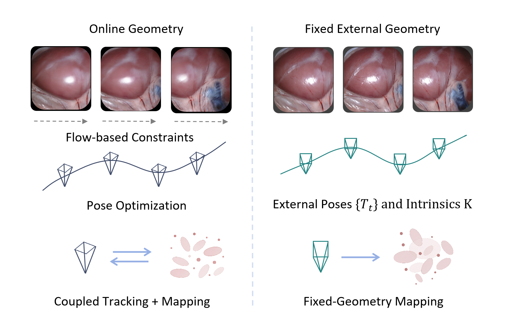
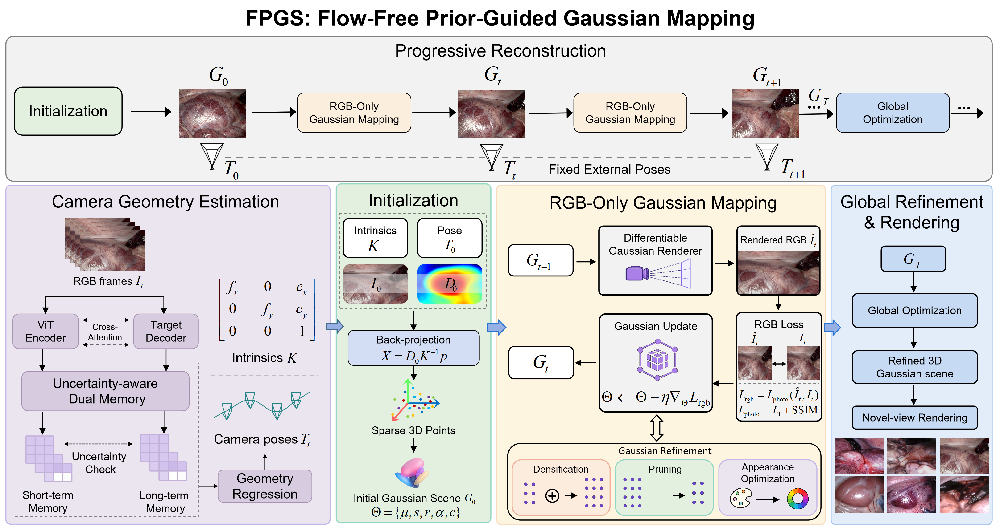
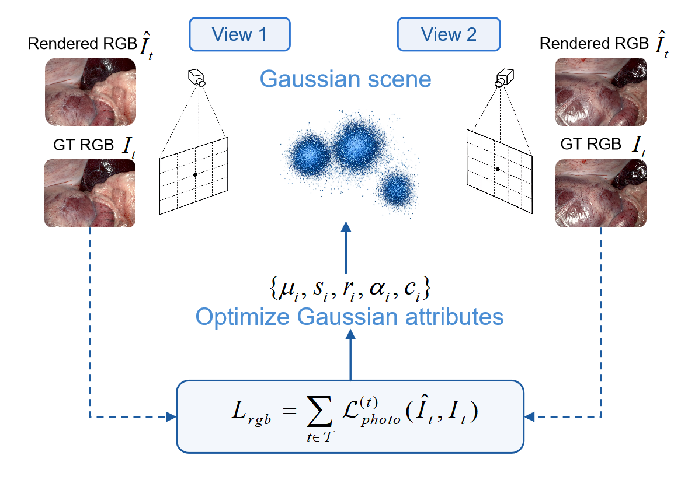
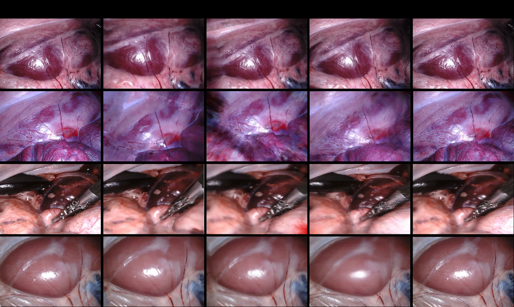
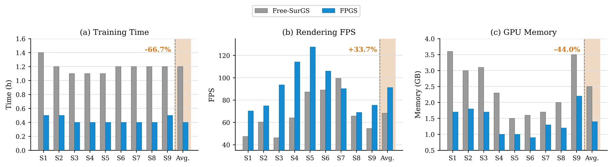

Coupled Tracking and Mapping
Flow-driven reconstruction estimates camera motion inside the reconstruction loop, coupling online pose optimization with Gaussian scene optimization.
Endoscopic 3D reconstruction supports surgical navigation, intraoperative visualization, and scene understanding. Recent surgical 3D Gaussian Splatting methods reduce the dependence on SfM initialization, but often introduce optical-flow-driven pose estimation into the reconstruction loop, coupling camera tracking with Gaussian mapping and increasing computational cost.
We present FPGS, a fixed-geometry Gaussian mapping framework for endoscopic surgical scene reconstruction. Camera poses and intrinsics are estimated by an upstream geometry module and then fixed in the reconstruction backend. A first-frame depth prior is used only for Gaussian initialization, while subsequent mapping is driven by RGB photometric supervision. Optical-flow supervision, projection-flow loss, persistent depth supervision, and online pose refinement are removed from the reconstruction backend.
On nine SCARED scenes, FPGS improves PSNR by 2.62 dB and SSIM by 0.086, while reducing LPIPS by 0.092 compared with Free-SurGS under the fixed-geometry setting. Training time is reduced by 66.7%, peak GPU memory by 44.0%, and rendering speed is increased by 33.7%.

Keywords: Endoscopic scene reconstruction, 3D Gaussian Splatting, external geometry, flow-free reconstruction, fixed-geometry mapping.
Flow-driven reconstruction estimates camera motion inside the reconstruction loop, coupling online pose optimization with Gaussian scene optimization.
When stable external poses and calibrated intrinsics are available, camera geometry can be treated as a fixed input to the reconstruction backend.
Optical-flow, projection-flow, and depth-related terms are introduced when camera geometry is jointly refined during reconstruction, increasing the complexity of the optimization loop.
Fixing the camera geometry allows the reconstruction backend to optimize only the Gaussian scene parameters using RGB photometric supervision.

Camera geometry estimation. Camera poses and intrinsics are obtained from an upstream geometry module. They are treated as fixed inputs and are not included in the optimization variables of the reconstruction backend.
First-frame initialization. The first-frame depth prior is used only for Gaussian initialization by back-projecting with fixed camera parameters.
RGB-only mapping. After initialization, only Gaussian position, scale, rotation, opacity, and appearance are optimized using RGB photometric supervision.
Global refinement. Sampled frames refine the Gaussian scene while keeping poses and intrinsics fixed. Tracking, flow-related losses, and depth supervision are not reintroduced.

| Aspect | Flow-driven | FPGS |
|---|---|---|
| Camera poses | Optimized | Fixed |
| Tracking | Included | Removed |
| Optical flow | Included | Removed |
| Mapping loss | RGB + depth | RGB only |
| Optimized parameters | Pose + Gaussian | Gaussian only |
The reformulation does not introduce a new pose network or a new Gaussian representation. It simplifies the reconstruction backend by decoupling camera tracking from Gaussian mapping.


FPGS reformulates flow-driven tracking-and-mapping as fixed-geometry Gaussian mapping for endoscopic surgical scene reconstruction. Stable external camera geometry is treated as an input rather than an optimization variable. The depth prior is restricted to first-frame initialization, and all subsequent mapping is performed using RGB photometric supervision.
The results indicate that, under the considered fixed-geometry setting, online optical-flow-driven pose optimization is not mandatory for the reconstruction backend. This design improves the quality–efficiency trade-off without introducing a new pose network or a new 3D Gaussian representation.
This work was supported in part by the National Natural Science Foundation of China under Grant 62541328, Guangxi Science and Technology Major Project (Grant Number: GUIKEAA23062031 and GUIKEAA23062073), and in part by the Tianshan Talent Cultivation Program--Scientific and Technological Innovation Leading Talents under Grant 2024TSYCLJ0002.